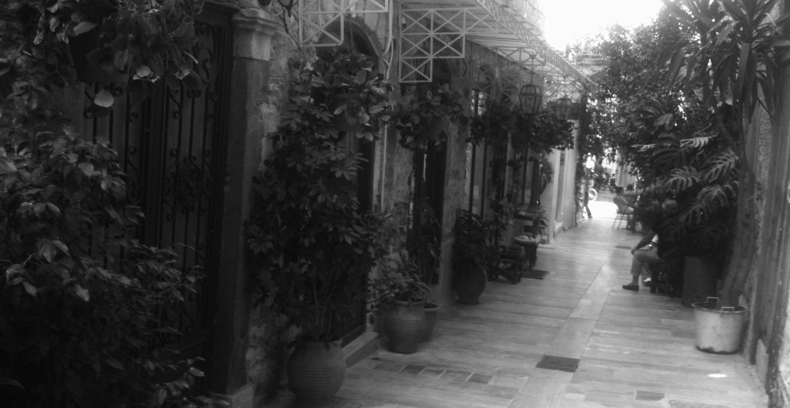
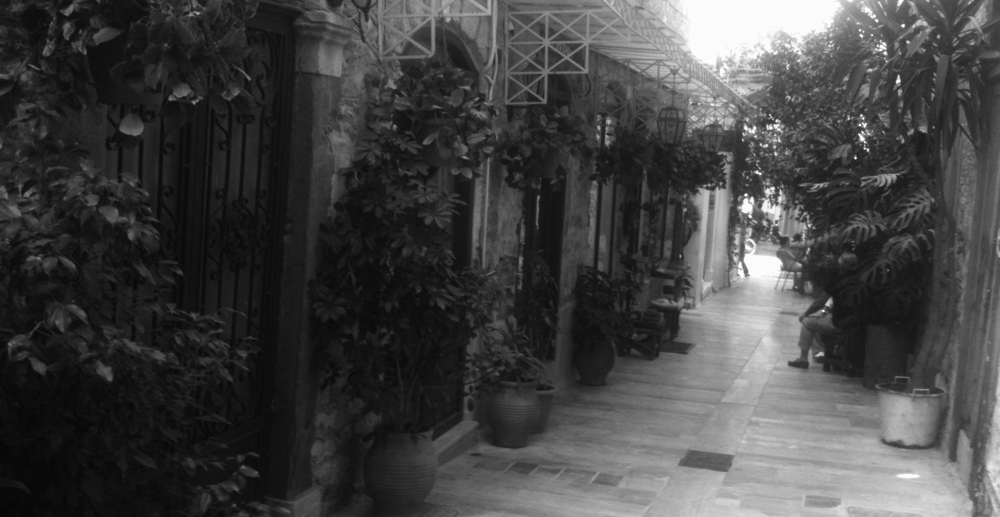

25.12.2019 - Bad.. - No one knows how far human mischief can go. It is certain that when dealing with such bad people you expose yourself to unacceptable situations. It's easy to lose your personality and your life's positions. It is easy to dive into the immorality of their thoughts and their life-long repulsion and eventually drown in a shit hole.
09.12.2019 - Paralogik Band progress -
Six years of experimentation brings Paralogik Duet to a new era. The main purpose is to express social concerns through music differentiation. Their new work will be presented to the public in 2020.
08.07.2019 - Messages from the past -
Messages from the past have left deep marks on you .. You look at me like I’m someone else. I understand .. Your memories are powerful and they encapsulate your present. The way you react its only your past that crushes the present. You wake up through your oblivion and release your captured thoughts and feelings that have never been answered. Rage in your thoughts and your mind play dirty games .. Blind feelings are driving your soul today. And we are lost forever .. In your past..
22.06.2019 - Orca esoteric programming language -
My new favorite music sequencer is Orca. Designed by Devine Lu Linvega (Hundred Rabbits) and is a ingenious approach that really takes every musical idea to another level. Orca is an esoteric programming language, designed to create procedural sequencers in which each letter of the alphabet is an operation, where lowercase letters operate on bang, uppercase letters operate on each frame. Find Orca here
05.03.2019 - Synths or software? - Some musicians believe that computers are not capable for creating nice electronic music like synths. They forget that synthesizers are basically computers and their circuits create waveforms and filters to synthesize sounds. They forget that the medium is not what makes the music but only the musician, his imagination, his experimentation are the things that give life and diversity to the sounds and notes.
31.12.2018 - Overthrow and zeroing - We do what we learn with mapped consciousness and mode of operation. Always with fixed obligations that determine our existence on this planet.
Undoubtedly we stand and act hypocritically against our nature and towards our creator who “inadvertently” placed us somewhere in this universe. Being destructive, greedy and rude, with an overly selfish disrespecting to our surrounding area, we want to save and exalt our souls. Religions, philosophies good and evil be born from us to us in order to soften the uncertainty of our problematic nature. The “must” on our everyday life eventually awakens “anarchist instincts” into our subconscious. And that’s where everything starts. The notions of good and evil no longer have any distinct boundaries … And our brain can not be persuaded of everything that has implanted us, Destabilizing so overthrow and zeroing …
Read more less
22.08.2018 - Good music? -
Who thinks it’s easy to create nice and unique music? Obviously not .. In addition to music studies, we need images and feelings and, moreover, a daily life full of questions about what exactly surrounds us.
Unfortunately, we live in the age of social networking and our precious time is spent in front of screens .. I know musicians who spend more than half a day in front of the computer .. not to write music but to communicate in the facebook with the hope that they will become known and successful …..

Ιt is at least ridiculous and vain to hunt for success without having any serious esoteric reason to do so. Without dreams, fantasy and creative life, there is no real art other than repetition and recycling.
Read more less
12.06.2018 - Din is Noise -
is a computer program, You can use your mouse and keyboard to make sounds Inspired by central-asian bowed string instruments, The Morin Khuur, the Kobyz, the Erhu, the Kamancheh, the Sarangi, and Cello.
An excellent Theremin when you arent playing right ;) Or play a raga of Indian classical music, OK, it is a sound synthesizer. Yes, it can accept input from your MIDI keyboard: Notes, control change, pitch bend and clock sync and5 oscillators.
16.03.2018 - Radium music editor - I am particularly pleased about the inclusion of my musical ideas as demo songs for Radium Music Editor . Radium evolves from the developer of the legendary Octamed (Amiga) Kjetil Matheussen.
Radium is a music editor with a revolutionary interface. Compared to the normal sequencers (or DAW if you prefer) interface editing is quicker and more musical data fits on the screen.
Compared to trackers, note positions and effects are edited graphically, which should be quicker, provide more vertical space and give a better musically overview. (Everything can also be edited by text, like in a normal tracker)

However, despite its unusual appearance, it’s a design goal for Radium to be straightforward to use, and easy to learn. It should not be harder to learn Radium than any tracker or most MIDI sequencers. Users who are accustomed to more traditional trackers might use a little bit time in the beginning getting used to the interface.
The development of Radium started in 1999 based on ideas developed 1997-1999 while extending the Octamed tracker on the Amiga. The first public version of Radium was released in 2000. Since then Radium has been ported to Linux, Windows, and Mac OS X. Radium is one of the oldest and most advanced tracker-like music editors of today.
Read more less
26.03.2017 - Your post is to short - I’ve noticed that some bloggers are putting agonising efforts to show off Thousands of meaningless words and these kind of articles could be written with 10 words but they have to show that they are something special in this world ….
By finishing this post, SVBTLE warns me that it’s too short… In a world that observes the following is reasonable that everything around us is programmed according to ..
- Passive acceptance and coexistence
- Poor aesthetics and life goals
- Opinions built on common and safe recruits
- Consumerism and Discrimination
- Success without a strong philosophy of life
- Understanding only that we perceive it as safe for us
- Lack of judgment and perception of diversity
- Lifestyle that fits only the views we have learn & adopted
- Compromise …
- Vanity..
Read more less
22.09.2016 - Paralogik Live / kasseta recordsThe first live performance of Paralogik will take place within the last two months of 2016. For further details will be informed by this website as from the the Social media.
03.05.2016 - Annoying Things song opens a new era of experimentation. Distinctive layered Sounds which are taken from the nature as well as from the urban environment.The crushed rhythmic elements joined together discreetly with other sounds, creating a predisposition to the listener to travel deeper into the underlying universe.
25.08.2015 - Social Loneliness - Some of them they taught us about good and evil. And some others they put in our lives innumerable “musts” by limiting our time so to have falsely limited the need for “why” for an actual esoteric search.
Strong justifications are: you must be a “social person” and you must follow the path of virtue of discipline … and also the production processes, profit, wealth for the benefit of course of the few.
Today, all societies are based mostly on failed economic systems and they give us the potential to build a powerful materialistic and extrovert “ego” with great doses of vanity. This is also what current social media means are speculative … But basically we are alone … far from our real self and away from real communication with those around us.
The choices are many … offering us the illusion that all that we choose is based on our own judgment … But very few are wondering if their judgment relies on guided models, so their choices are in fact predetermined.

Serving lifestyles for recognition and social acceptance … and usually endless inner loneliness within our delimited and ensconced soul. Many times we manage and intercept the physical course of our thoughts and feelings using psychologists, drugs, drugs, alcohol. These are unfortunately some of today’s “practices” to understand and find our real self or even to avoid disturbing us …
We avoid experiencing anything positive and negative that comes out of us effortlessly. We believe that we can feel real happiness, true love, real communication, acting selectively and filtering the feelings that exist within us. We have separated the soul from matter by reaching distortion where pleasure is not born through us but by the ego.
We face with suspicion and selfishness that we are surrounded by our “blind” belief that we are the focus of this world and that we must remain unaffected unscathed and perfectly classified.
Lift your head some night and see the stars …. A truly shocking image of zillion stars in the universe. It is the magic of the harmonious anarchy that we should normally allow both our soul and those around us.
We have forgotten in these societies fundamental and basic things that would make us more people so that we are truly close to each other. We built economic and social systems to help us and serve us but eventually we were trapped and served by sacrificing our mental health, our time, our feelings. We are essentially more alone than ever …
It is probably the time to understand and reconcile (and not just compromise) first of all with ourselves so that we never feel alone. The time has come that we have to respect the uniqueness and diversity around us more than we have learned …
Read more less
01.01.2015 - Starting with the name Paralogik which is a paraphrase of the Greek word "παράλογο", two humans and musicians Gene and Nick are experimenting and trying to express through their music many unresolved social and esoteric concerns in a world where egoism, fear, greediness, hypocrisy and irrationality has replaced most of the times anything reasonable. Their industrial and dark sound travels through ethereal melodic light which eventually leads to the truth and real.
08.04.2014 - Greece a Country of tolerance - There are two ways to conquer and enslave a nation. One is by sword. The other is by debt. – John Adams
Hidden behind the grey shades of the current financial and political situation in Greece, the words that marks today and tomorrow is the confusion and disorientation.In May 2010, when Greece’s first bailout was approved and the austerity antisocial measures started, the unemployment rate was at twelve percent. That rate has since climbed almost to twenty seven percent, and the youth unemployment rate for ages up to 25 years old has surpassed the seventy percent mark.

Poverty and destitution are spreading, and the country’s gross domestic product has descended rapidly, while its debt has grown from 127 percent to 180 percent over the past three years.

Four hundred thousand families in Greece not have an income and about three hundred thousand employed workers have not been paid for months. Austerity resulted in the deprivation of basic rights of Greek citizens and greatly reduce their salaries and pensions.
Another tragic result of this situation is the large increase in the suicide rate in the last three years, and at the highest level in 50 years. Before the austerity measures, Greece had the lowest suicide rate in Europe. A publicly debt crisis has been used as an opportunity to dissolve the welfare state and to sell off profitable public enterprises and assets at bargain prices.

Poverty, inequality and lack of access in primary services come to confirm the lack of humanity in the modern globalized economy. Everything is done with the support of a significant segment of the Greek financial and political elite, which since the onset of the crisis has relied heavily on dictatorial action in order to obey the commands of the country’s foreign creditors.
In the real world, economic elite dislikes social equality and investing building consuming dependencies and social fear..
And how the Greeks faced this situation ; All they do is to staying silent and tolerant strangled by loans and unemployment. Nobody is able to react against the legal terrorism of debt .
The economic “global machine” which serves the oligarchy absorbs social vibrations and neutralize any reactions.
This situation would not be happening for a long time yet. The social explosion will not take long to come. And it will come when everyone realizes that deprive ourselves valuable goods and sacrificed many precious things for money and consumption.
Read more less


 
